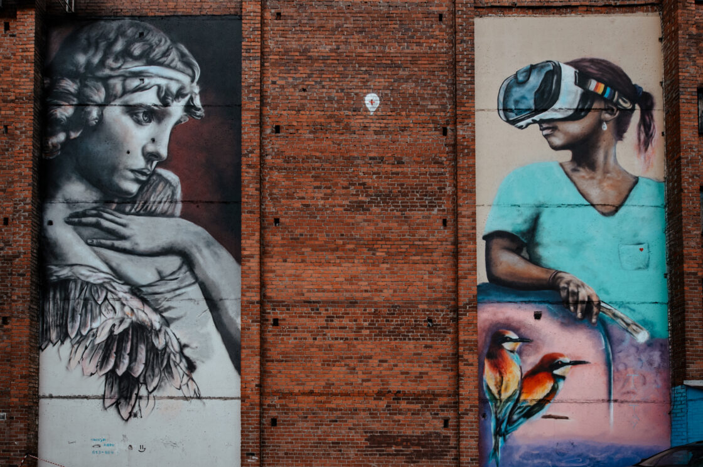

В Тюмени завершился прием заявок на фестиваль стрит-арта «Морфология улиц». 388 человек из 90 городов России захотели стать участниками события. В шорт-лист попадут всего 22 человека, итоги подведут 29 июня.

Больше всего художников заявились из Москвы (79) и Санкт-Петербурга (61). Из Тюменской области зарегистрировался 41 человек. Также свое портфолио отправили стрит-артеры из Екатеринбурга, Новосибирска, Краснодарского края, Самары, Красноярска, Перми, Нижнего Новгорода и других городов страны. Так, в «Морфологии улиц» хотят принять участие 119 девушек и 269 молодых людей.
Сейчас эксперты оценивают портфолио и опыт художников, шорт-лист участников появится 29 июня на сайте морфологияулиц.рф. В состав жюри вошли Дмитрий Аске из Москвы, художник, исследователь стрит-арта и граффити, автор журнала об уличном искусстве Vltramarine, автор графических работ на выставках в Бельгии, Великобритании, Германии, Мексике и США, и Иван Ларионов из Томска, идеолог выставки уличного искусства, музыки и новой городской культуры Street Vision.
Заявки и портфолио художников будут оценивать по следующим критериям: визуальная привлекательность работ, оригинальность и уникальность техники исполнения, наличие посыла и общих идей, наличие опыта реализации эскизов на крупных городских объектах.
Нанесение эскизов на стены и поверхности пройдет в Тюмени с 20 июля по 20 август
Организатор фестиваля «Морфология улиц» — мультицентр «Контора пароходства».
Фестиваль «Морфология улиц» пройдет в Тюмени в третий раз. Первая реализация проекта проходила в 2017 году, на ней художники из Тюмени, Екатеринбурга, Кургана и Кирова нанесли 28 стрит-артов. В 2019 году тюменцы создали 25 стрит-артов. Среди экспертов за два года в Тюмени были Никита Nomerz, Виктор Фрукты, Владимир Абих, Габонская Гадюка, Александр Селиванов, Василий Волчок и другие.
.png)